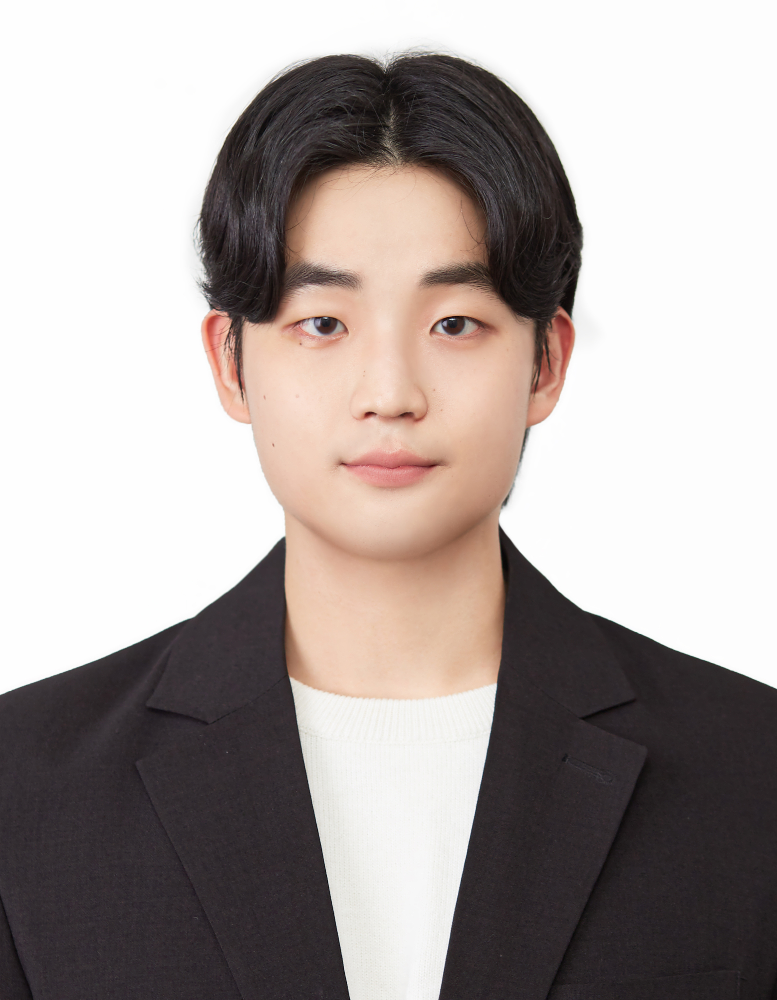

Music & Audio Research Group, Seoul National UniversitySept. 2024 – Present
Ph.D. Student, Department of Intelligence and Information
Seoul, Korea
I'm Seungu Han, a Ph.D. student in the Department of Intelligence and Information at Seoul National University and a member of the Music & Audio Research Group (MARG), advised by Professor Kyogu Lee.
My research focuses on speech enhancement, speech representation learning, and diffusion models.

Seungu Han, Sungho Lee, Eungbeom Kim, Seaone Ok, Kyogu Lee
Under Review
Seungu Han, Kyogu Lee
Under Review
Seungu Han, Sungho Lee, Kyogu Lee
ICASSP, 2026
Seungu Han, Sungho Lee, Juheon Lee, Kyogu Lee
Interspeech, 2025 (Oral)
Nominated for Interspeech 2025 Best Student Paper Award.
Seungu Han, Junhyeok Lee
Interspeech, 2022 (Oral)
Seaone Ok, Seungu Han, Eungbeom Kim, Kyogu Lee
Interspeech, 2026
Seaone Ok, Min Jun Choi, Eungbeom Kim, Seungu Han, Kyogu Lee
ICASSP, 2026
Sungho Lee, Matteo Scerbo, Seungu Han, Min Jun Choi, Kyogu Lee, Enzo De Sena
IEEE Transactions on Audio, Speech and Language Processing
Junhyeok Lee, Seungu Han, Hyunjae Cho, Wonbin Jung
ICASSP, 2023
Junhyeok Lee, Seungu Han
Interspeech, 2021
Star counts as listed in my résumé.